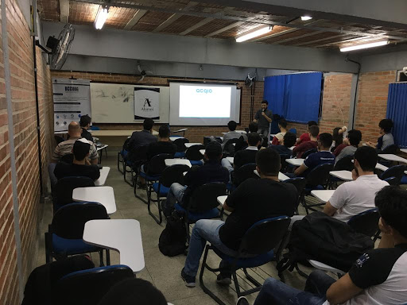
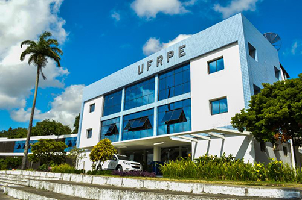
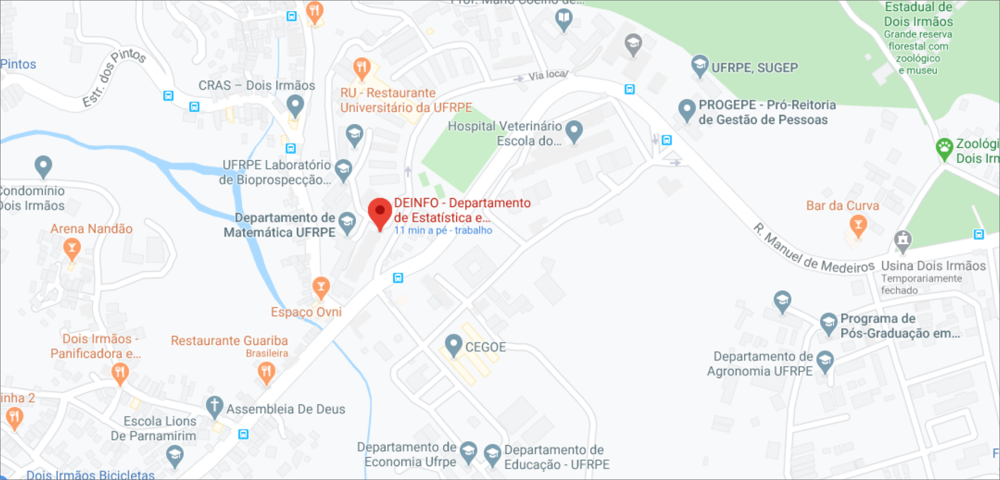

Infraestrutura


Cursos

Mais informações

Onde Estamos

DEInfo - Departamento de Estatística e Informática
Site: http://www.deinfo.ufrpe.br
E-mail: secretaria.deinfo@ufrpe.br
Fone: +55-81-33206491
DDC - Departamento de Computação
Site: http://www.dc.ufrpe.br
E-mail: secretaria.dc@ufrpe.br
Fone: +55-81-33205440